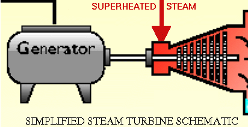
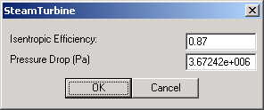
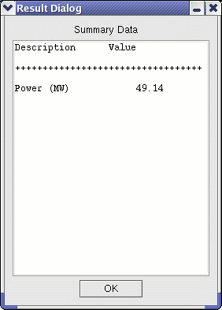

The Steam Turbine module is based on thermodynamic calculations using adiabatic efficiency. The efficiency is applied to an isentropic expansion process using the ASME 67 steam properties. |
 |
|  | This User Interface allows the user to specify the desired Isentropic Efficiency (as a decimal fraction) and the Pressure Drop across the module. |
|  | The summary table outputs Power generated by the turbine shaft unit. |